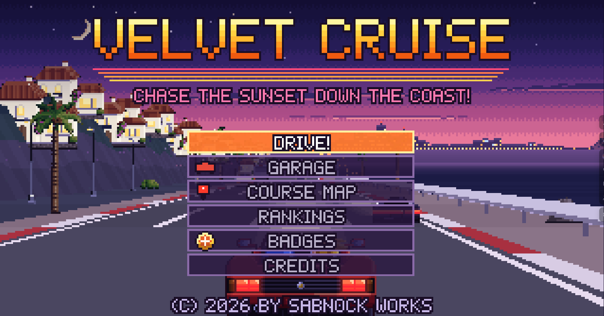
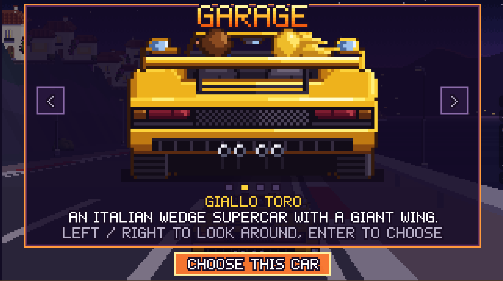
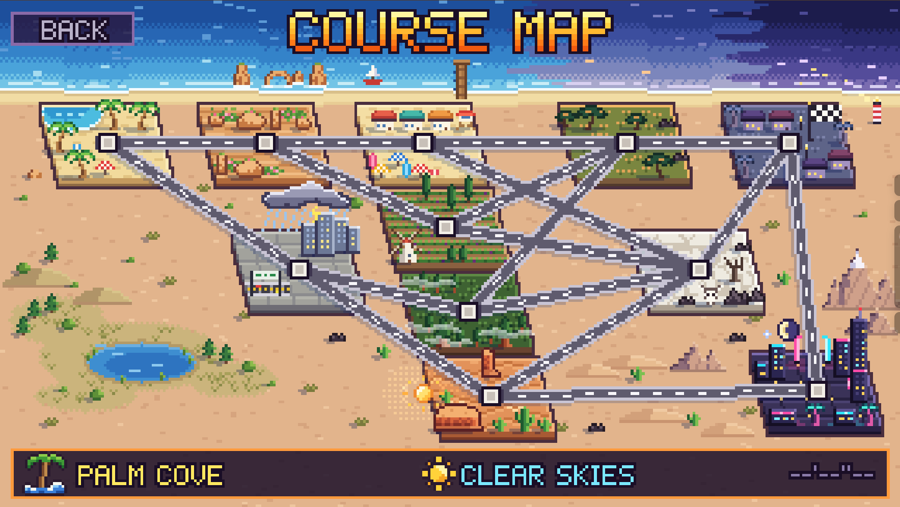

01 Retro arcade driving
Velvet Cruise
Chase the sunset down the coast!
Take a red convertible down a seaside highway, with rocky cliffs on one side and open water on the other. Velvet Cruise is a pixel-art arcade driving game with a low orange sun ahead and another bend to take.
Hit DRIVE! to start your run, or open RANKINGS to see how your times compare.
Keyboard controls
- ← →
- Steer
- ↑
- Gas
- ↓
- Brake
- Enter
- Start

